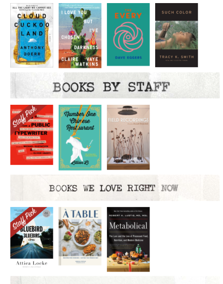
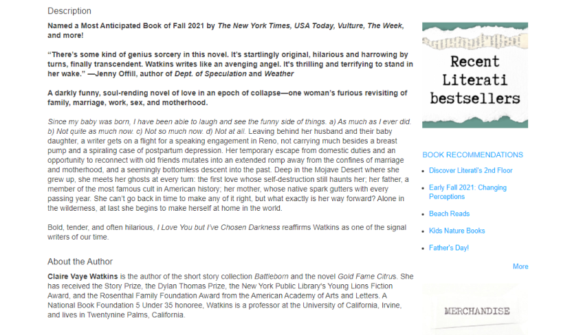
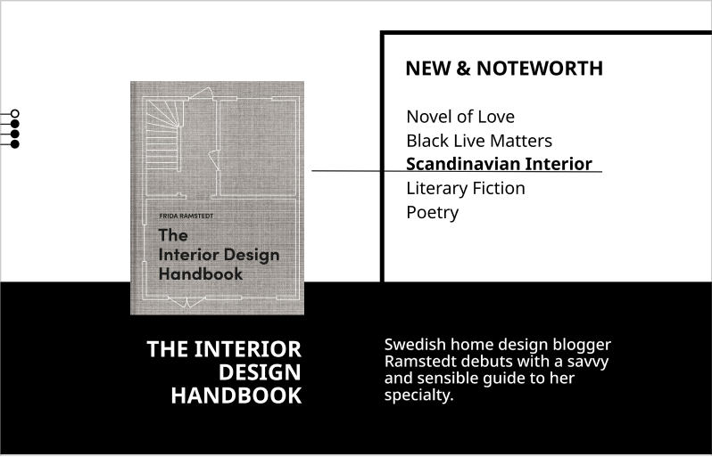
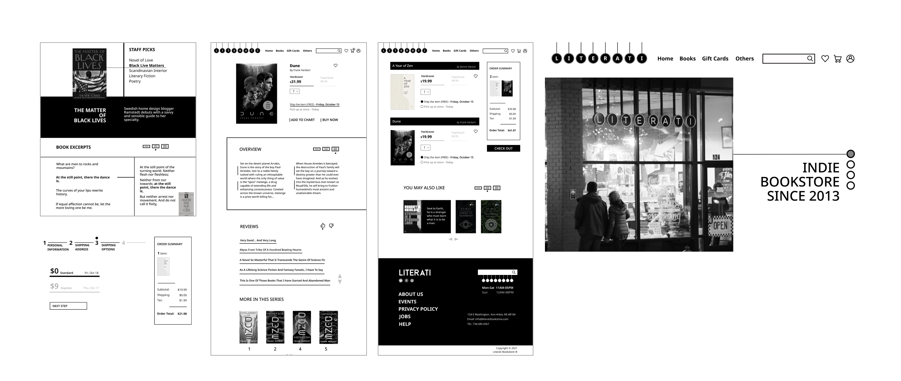
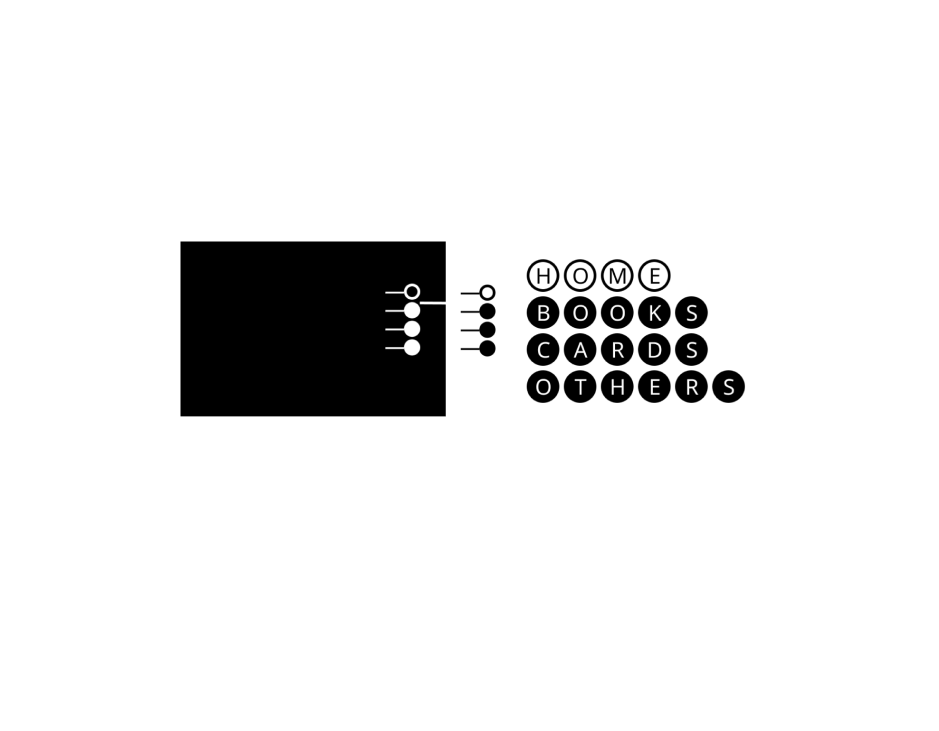
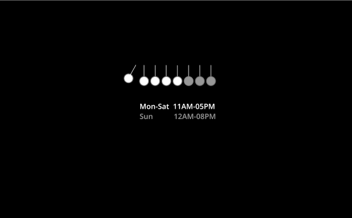
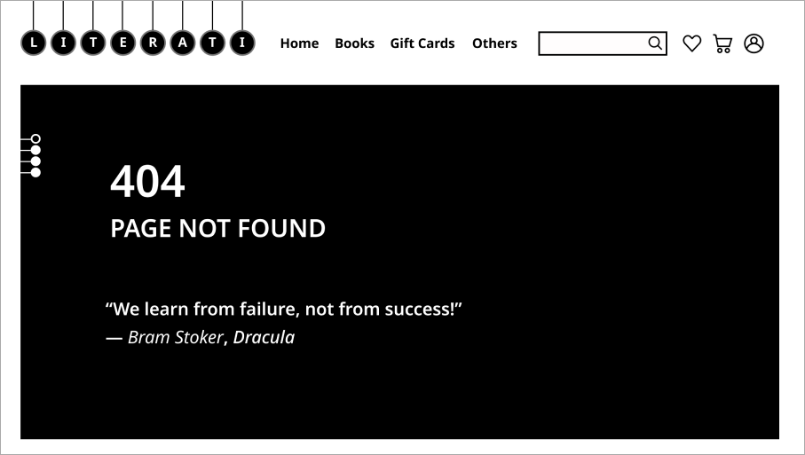
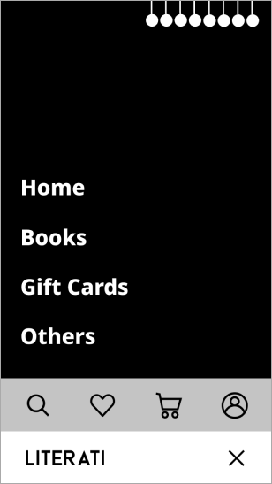

What are we paying for when we buy a book?
The content.
?Problem Statement?
1.Inefficient Browsing System
The cover-based browsing system can barely provide useful information to help users understand what a book is about.
2. Tiring Reading Experience
Unclear area divison
Confusing font choices
The content width is too long
!KEY DESIGN DECISIONS!
1. Content-based Browsing System
Use phases instead of covers to help users to find their dream books based on content.
2. Customizable Reading Experience
Users can adjust the content size based on their reading habits.
3. Consistent and Comfortable Reading Experience
Keep content’s fonts and width easier for users to read.
4. Clear Area Division
Add more breath areas to help users find different sections.
5. Liti Bar
Users can go to different pages without going back to the top of the page.
6. Loading Page
Animation of Newton’s cradle and bookstore’s opening hours are shown on the page
7. 404 Page
A quote about failure is included, which can bring users to the product page of its book.
8. Mobile Friendly
Most buttons are located at the bottom of the page, which is convenient for one-handed operation.
Next Project: Playce